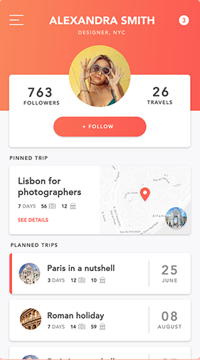

You love to plan? Create the trip
Before every trip you create detailed plan where to go and what to see. You make notes about worth to visit places and want to have everything in one app? Just open Travello, create new trip add travel points and share it eith your friends. You can also makae yout trips public to let other users follow your steps!Plan the trip you've always dreamed about
With Travello it's easier than you think.